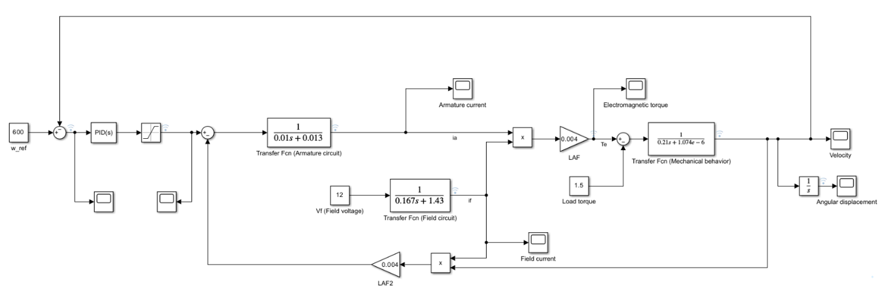
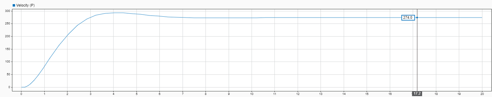

Control & Simulation
DC Motor Speed Control
A separately excited DC motor modelled in Simulink from its field, armature and mechanical equations, compared with the analytical solution, then closed with P and PI speed controllers.

Overview
Does the transfer-function model reproduce the motor's analytical behaviour, and which controller holds the speed at its reference under a 1.5 N·m load?
Approach
- Field, armature and mechanical equations implemented as transfer-function blocks.
- Open-loop model at V_a = 24 V, V_f = 12 V, T_L = 1.5 N·m.
- P and PI speed controllers with the armature voltage saturated at 0–24 V.
Results
| Open-loop steady-state speed | 697.7 rad/s in simulation and theory |
|---|---|
| Steady-state armature voltage | 20.7 V simulated vs 20.72 V theory |
| Field current | 8.39 A |
| Motor constant K | 0.03356 |
| Stall torque / no-load speed | 61.96 N·m / 715.0 rad/s |
| P controller, K_p = 0.03 | 274 rad/s, error 326 rad/s |
| PI controller, K_p = 0.035, K_i = 0.015 | 599.4 rad/s |
From the report



